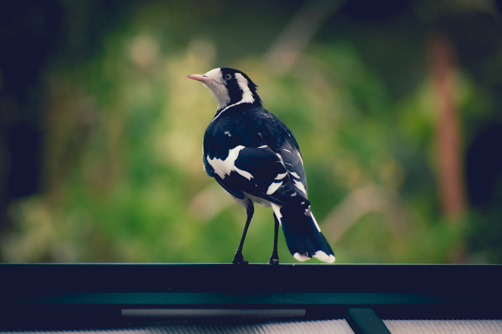

The Magpie-lark is a familiar black-and-white Australian bird that is often seen around wetlands, gardens, farmland and open woodland. Males and females both have bold black-and-white plumage, although their facial patterns differ. The species spends much of its time on the ground searching for insects and other small invertebrates, often walking across lawns and muddy ground. Magpie-larks are territorial and can be particularly vocal, producing a series of clear calls that are sometimes described as a conversational exchange between pairs. They build distinctive mud nests in trees, often close to water.